Movie Reviews (93 total)
93
Total Reviews
68
With Posters
8
Highly Rated
⭐ Highly Rated (8)
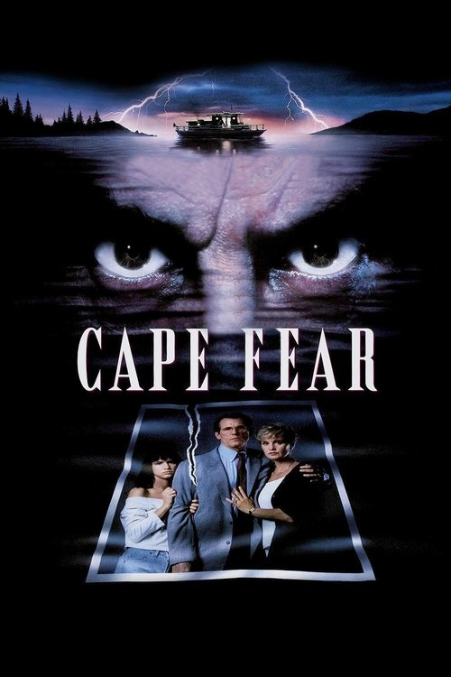
Cape Fear (1991)
★★★★
"Same plot as Cape Fear (1962). But slightly
different. Man who is chased by evil convict is
guilty. He fixed the convict's case so he would
loos..."
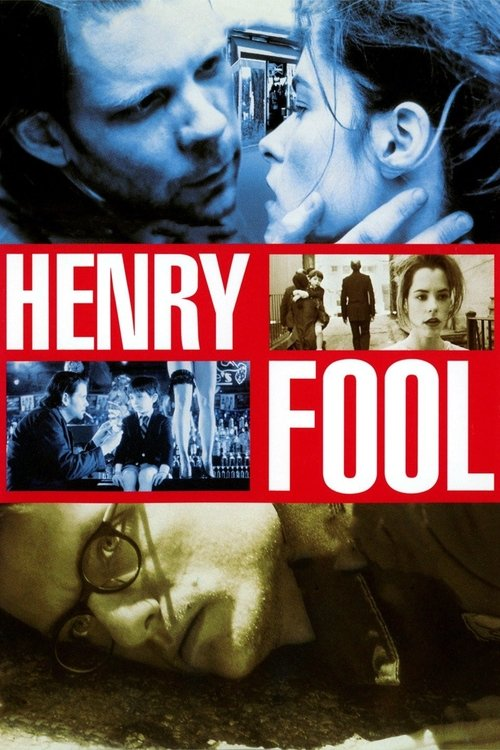
Henry Fool (1998)
★★★★
"A garbage man writes an epic poem or is it
pornography. He is inspired to write by a wandering
ex-child molester. ..."
Microserfs (1995)
★★★★
"Nerds at microsoft join a startup and regain their
lives. Sad ending, unexpected and unneccessary...."
Requim for a Dream ()
★★★★
"Several characters discover drugs, and loose too much
to be described. Highlight: The split screen used
perfectly to show the seperation of two ch..."
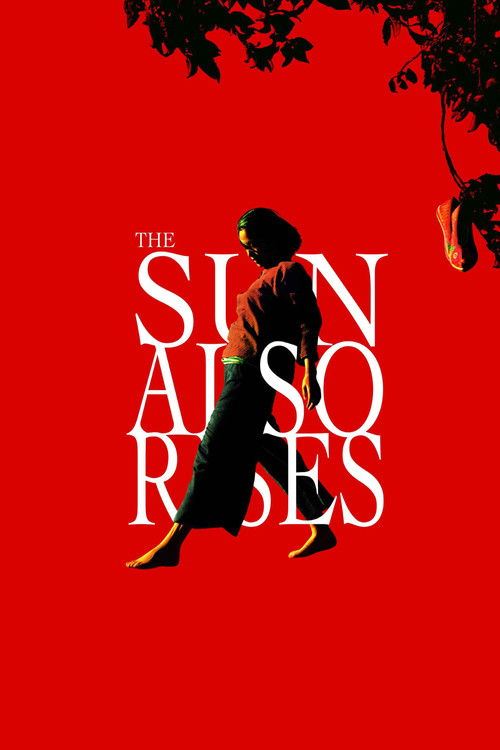
The Sun also Rises ()
★★★★
"A crew of misfits visit Pampaloma for some
bullfighting action...."
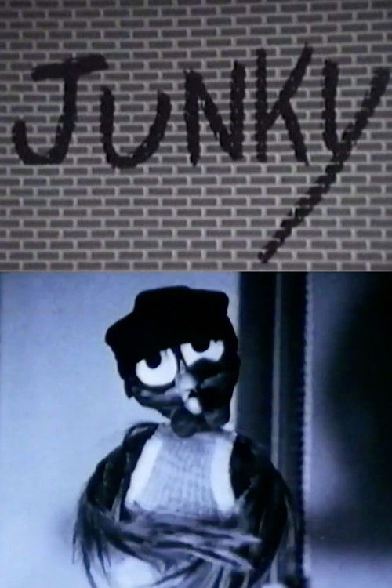
Junky ()
★★★★
"A man develops a habit. A habit for heroin...."
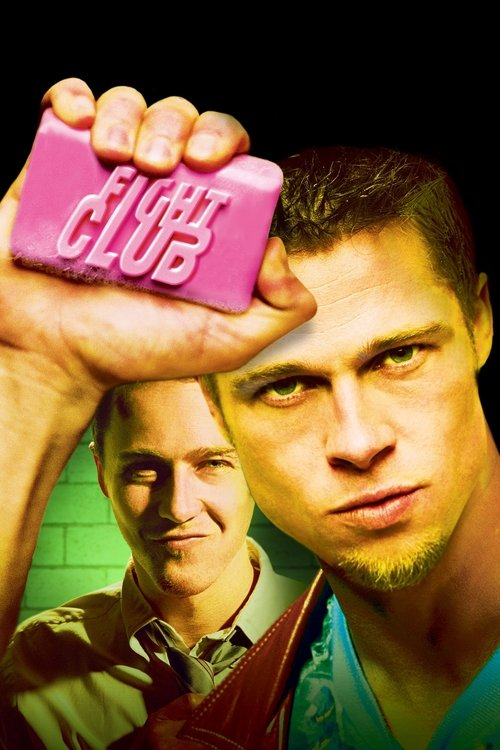
Fight Club ()
★★★★
"A man who can\\'t sleep becomes addicted to self help
groups, then starts one of his own: Fight Club. You
know the plot, you watched the movie...."
Basketball Diaries, The ()
★★★★
"A story about the streets of New York. Mainly
features a young man\\'s journey through basketball,
drugs and sex...."
All Reviews
Boxing Helena ()
★★
Plot: A crazed surgen dreams about "boxing helena", ie:
Cutting off her arms and legs and keeping her locked
up in his house. Pretty sick.
Harry Potter and the Chamber of Secrets ()
★★★
Plot: Harry is back at Hogwarts for Year 2. He and his
friends fight another monster. They win.
Cape Fear (1991)
★★★★
Plot: Same plot as Cape Fear (1962). But slightly
different. Man who is chased by evil convict is
guilty. He fixed the convict's case so he would
loose, and was cheating on his wife on multiple
occas...
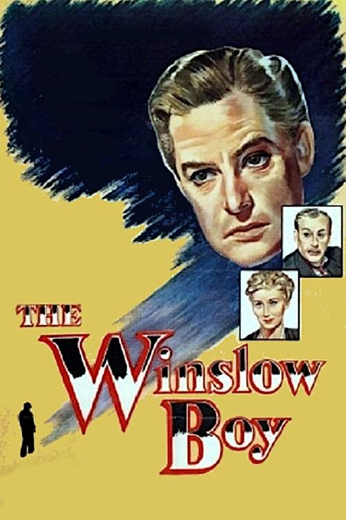
Winslow Boy, The ()
★★★
Plot: English. A young boy is kicked out of school for a
crime he didn't commit. His family comes together and
fights for his honor.
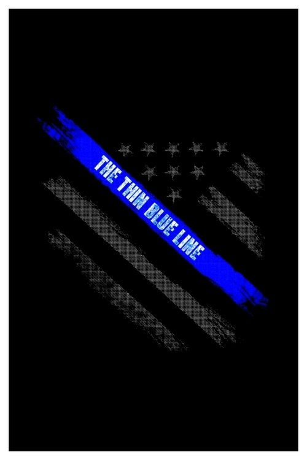
Thin Blue Line, The ()
★★★
Plot: Documentary. A man is falsely accused of murdering a
police officer.
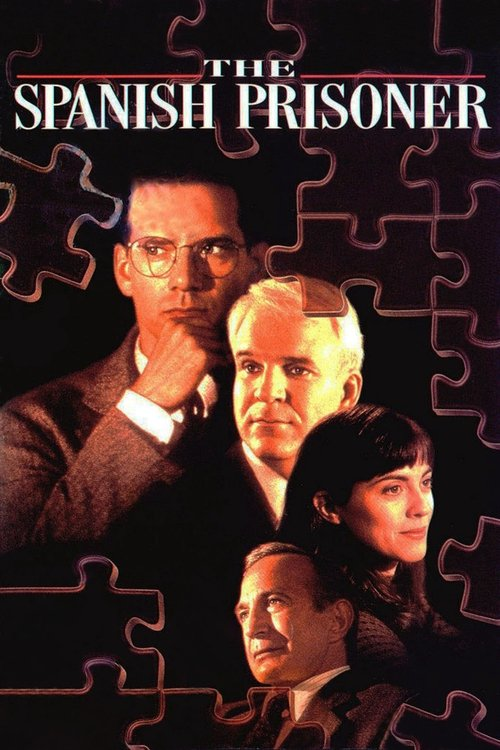
Spanish Prisoner, The ()
★★★
Plot: A man developing a process is caught in a complicated
confidence scam. People try to steal the process.
Lots of twists and turns.
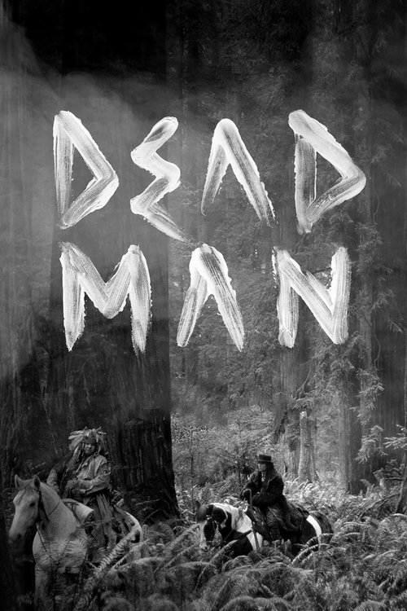
Dead Man ()
★★
Plot: William Blake (Johnny Depp) travels to the wild west
and looses his job. He meets a girl and then gets in
a gun fight with her boyfriend, kills him, the girl
killed and he's on the run. Travels w...
Generation of Swine ()
★★★
Plot: Collection of articles from the 80s. Mainly focusing
on the 1988 presidential election, and the Iran Contra
affair.
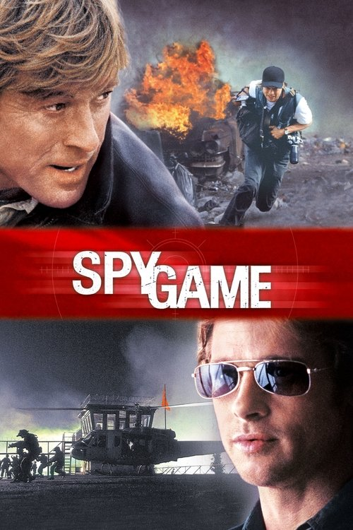
Spy Game (2001)
★★
Plot: Old CIA agent trained young CIA agent. Young CIA
agent ignores his teaching and falls for a girl and
then puts his life on the line for her but he and she
are saved by old CIA agent.
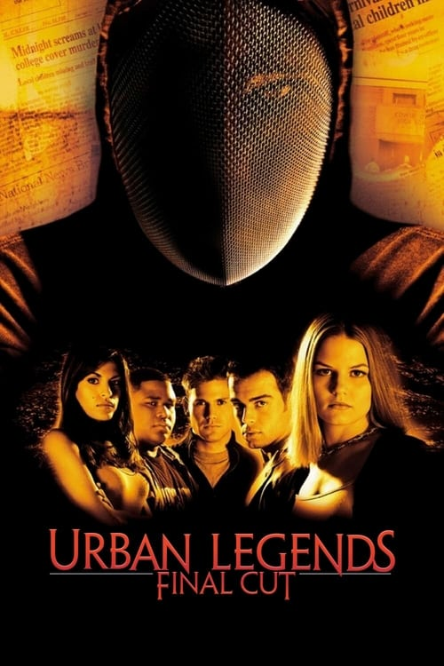
Urban Legends 2: Final Cut ()
★★
Plot: Film students making a film about urban legends get
killed by their film proffessor who uses urban legends
to kill them.
Luzhen Defence, The ()
★★★
Plot: A brilliant withdrawn chess player falls in love and
has to choose between chess and life. Sad ending: he
committs suicide.
Henry Fool (1998)
★★★★
Plot: A garbage man writes an epic poem or is it
pornography. He is inspired to write by a wandering
ex-child molester.
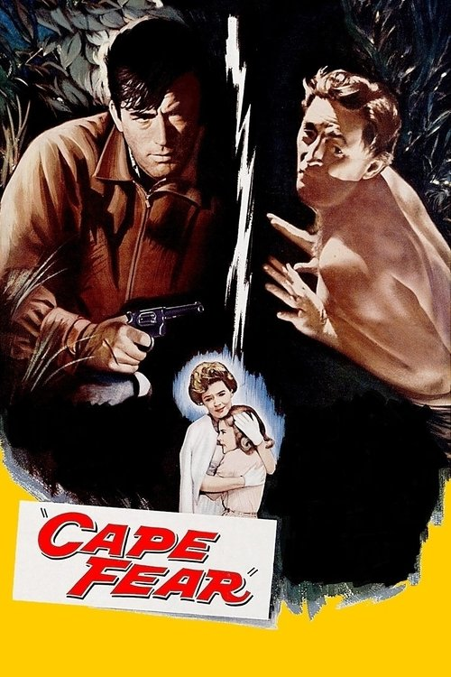
Cape Fear (1962)
★★★
Plot: A man released from jail seeks revenge. Gregory Peck
tries to protect his family from this madman (Mitchum).
Bridget Jones: the edge of reason (1999)
★★★
Plot: Sequal to Bridget Jones' Diary. Jones, now with a
boyfriend, manages to screw that up, get locked up in
Thailand, but gets free and gets back together with
boyfriend.
Dave Berry's Complete Guide to Guys (1995)
★★★
Plot: Non fiction (Humor). Berry writes about guys through
the ages, from medievil times until modern times (ex:
using a trebuchet to launch a dead horse, or using a
trebuchet to launch a buick).
Zen and the art of screenwriting (1996)
★★★
Plot: Non fiction. Interviews with screen writers and
advice from former UCLA proffessor William Froug.
Smith of Wooton Major & Farmer Giles of Ham (1969)
★★★
Plot: Two novella length stories. Wooton Major is about
fairies and cooking. While Farmer Giles is about
dragons and giants.
Glengarry Glen Ross (1982)
★★★
Plot: The troubles of salesmen are explored in this awesome
play.
Adventures in a TV Nation (1998)
★★★
Plot: Non fiction. The behind the scenes story of Michael
Moore's television show TV Nation. Details several of
their shows.
Downsize This! (1996)
★★★
Plot: Non-fiction/humor. Collection of chapters ("essays")
on various political issues.
Generation X (1991)
★★★
Plot: Three disafected youths escape their lives to the
desert to tell stories and try to figure life out.
Harry Potter and the Sorcerer's Stone (1998)
★★★
Plot: A young boy discovers that he is the son of a great
wizard (and witch) and joins a wizard school. Similar
to Star Wars, Hitchhiker's Guide, and of course The
Lord of the Rings.
Microserfs (1995)
★★★★
Plot: Nerds at microsoft join a startup and regain their
lives. Sad ending, unexpected and unneccessary.
Lord of the Rings, The (1954)
★★★
Plot: Mystical. A hobbit must travel far to destroy an evil
ring. Many twists and turns.
Regulators, The (1996)
★★
Plot: An evil spirit enchants a kid, then uses the child\\'s
heroes (cartoon characters and cowboys) to wreck havoc
in a suburban setting.
Music for Chameleons (1975)
★★★
Plot: Multiple plots. Collection of short stories, self
interviews and jouranlistic fiction.
Spike, Mike, Slackers and Dikes (1995)
★★★
Plot: Non-Fiction. An overview of American Independant film
from the 80s to the mid ninties.
The Odd Couple ()
★★★
Plot: Two people who shouldn\\'t live together do. They
fight, they fight and it\\'s hilarious.
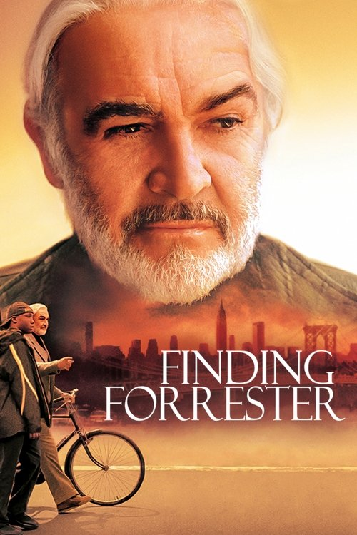
Finding Forester ()
★★★
Plot: Good Will Hunting on racial lines. Sean Connery
pretends to be J.D. Saldinger and teaches a young
black man to write. Uplifting.
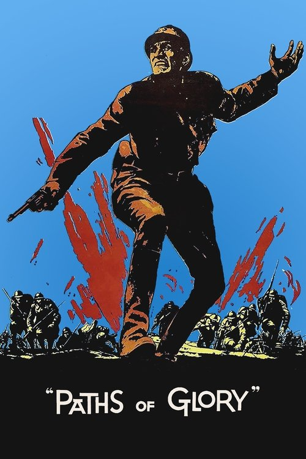
Paths of Glory ()
★★★
Plot: A general is blamed for not forcing his men to
committe suicide on the battlefield. Courtroom drama,
three men are held accountable and tried of
cowardess. They die.
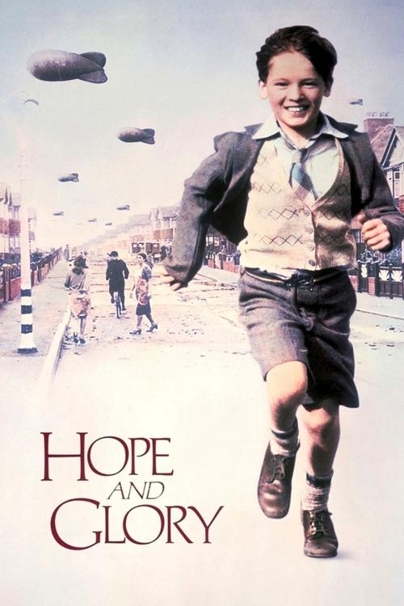
Hope and Glory ()
★★★
Plot: A look at the homelife during the Blitz of WWII.
Highlight: The gang of little boys bribes a girl to
show them her privates, hilarious.
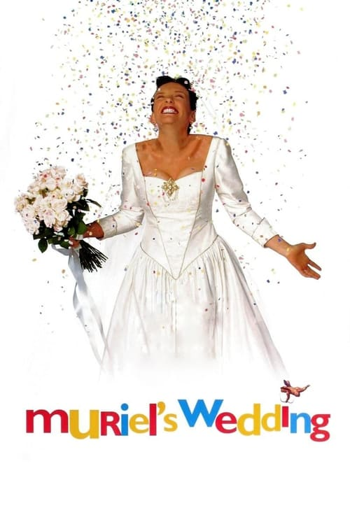
Muriel\\'s Wedding ()
★★★
Plot: Wierd british woman wants to get married.
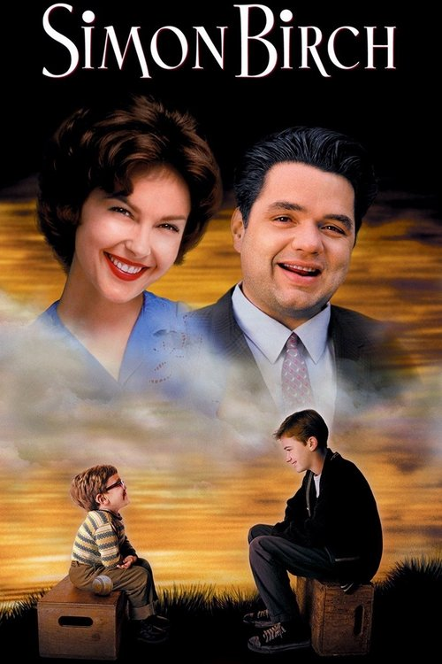
Simon Birch ()
★★★
Plot: A freakishly small boy helps foster belief in God for
a young boy.
Pretty in Pink ()
★★★
Plot: Cinderella. Teenage dating. Redhead wants rich boy,
but she should date Ducky, the charming nerd character.
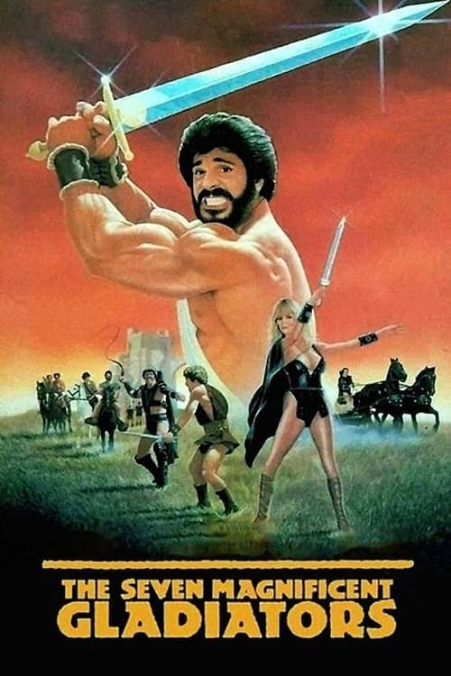
Magnificant Seven, The ()
★★
Plot: Seven cowboys protect a small village.
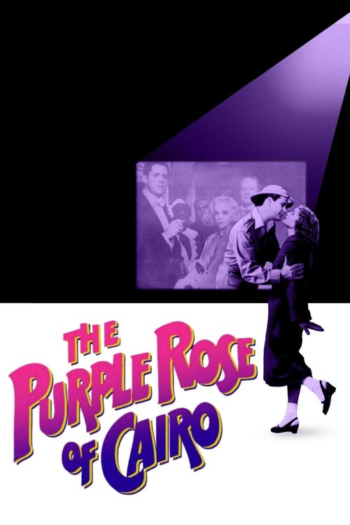
Purple Rose of Cairo, The ()
★★★
Plot: A character from a movie jumps off the screen and
falls in love with a real woman.
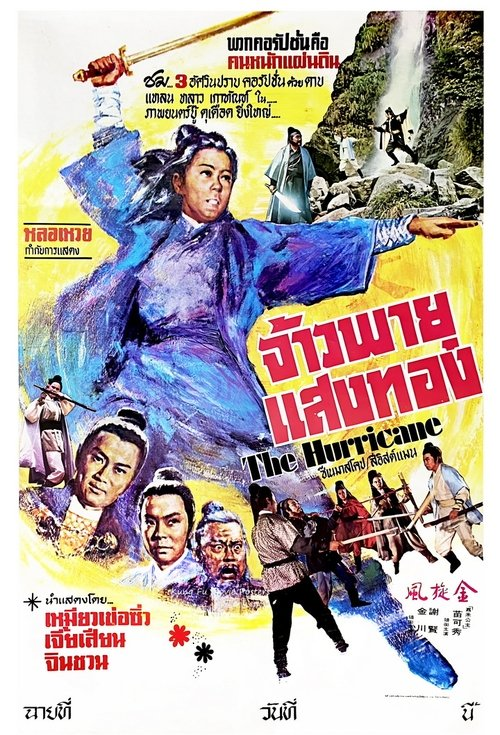
Hurricane, The ()
★★★
Plot: Here is the story of the hurricane.
A man the authorities came to blame.
For something he never done.
Put in a prison cell, but one time he could have been,
the champion of the world.
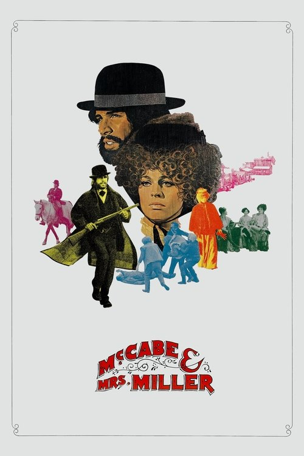
McCabe & Mrs. Miller ()
★★★
Plot: A wild west entrepuner falls in love with a Madam.
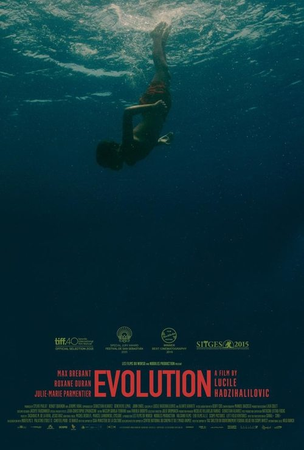
Evolution ()
★
Plot: A gang of idiots fight aliens.
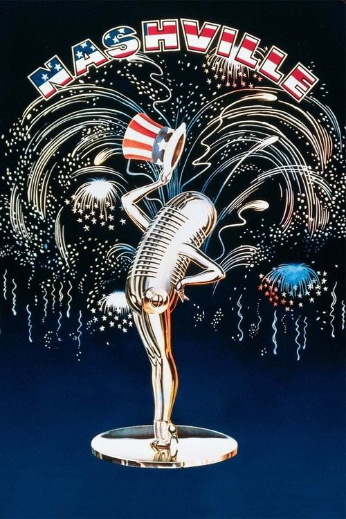
Nashville ()
★★
Plot: Several characters explore the music scene of
Nashville, TN.
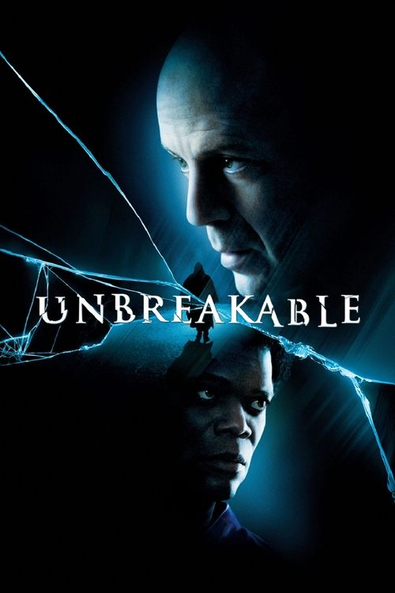
Unbreakable ()
★★★
Plot: Issue #0 for a comic book series. Genesis. A man who
is incredibly strong discovers his powers and his
enemy.
Coyote Ugly ()
★★
Plot: A hot girl gets a job in a bar. She records a song
and sings it at the bar to become a major songwriter.
Horatio Alger exploitive.
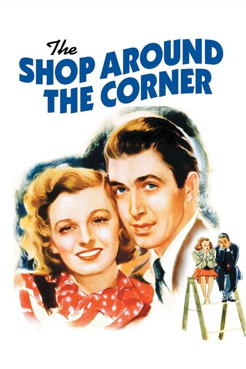
The shop around the corner ()
★★★
Plot: A young man (Stewart) falls in love with his co-
worker. Ups and downs, he gets fired, he gets re-
hired. Heartwarming.
Truman ()
★★★
Plot: Details the life of President Harry S. Truman
Crimes and Misdemenors ()
★★★
Plot: A man (Landau) has his mistress murdered and feels
bad. Another man (Allen) looses the girl he loves to
a pompous ass (Alda). Highlight: Allen makes a film
within a film where he compairs Alda\\...
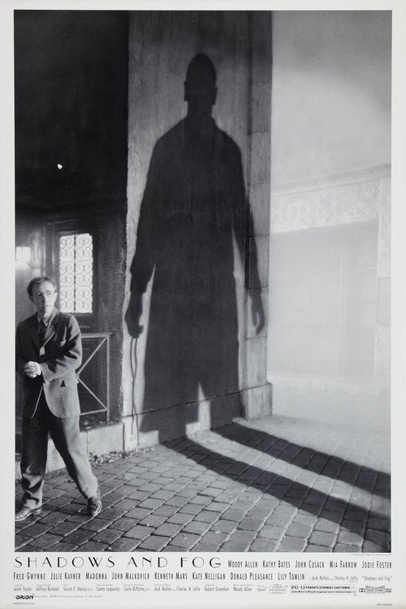
Shadows and Fog ()
★★★
Plot: A man is chased by death througout the city of New
York. (based on the play: Death)
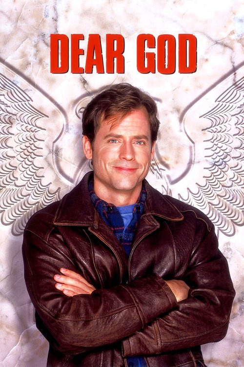
Dear God ()
★★
Plot: Mailmen start answering mail sent to God and doing
good deeds.
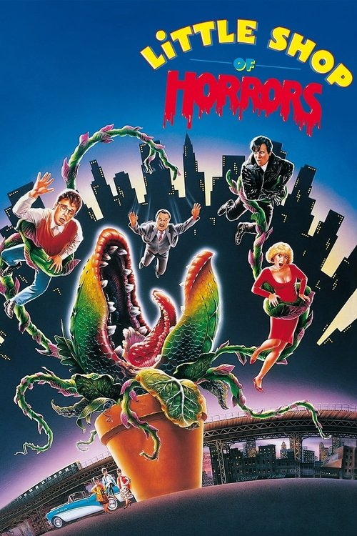
Little Shop of Horrors ()
★★
Plot: An evil man eating plant goes wild in this MUSICAL.
Requim for a Dream ()
★★★★
Plot: Several characters discover drugs, and loose too much
to be described. Highlight: The split screen used
perfectly to show the seperation of two characters
when they\\'re incredibly close.
I shot Andy Warhol ()
★★★
Plot: A look inside the life of the woman who wrote the
S.C.U.M. Manifesto and shot Andy Warhol (hence the
catchy title).
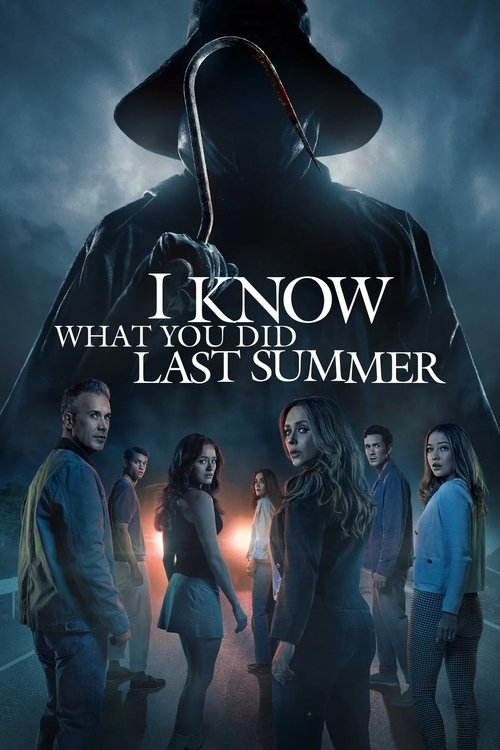
I know what you did last summer ()
★★
Plot: Stupid teenagers run over a stranger with their car
and are \\"haunted\\" by him, one year later.
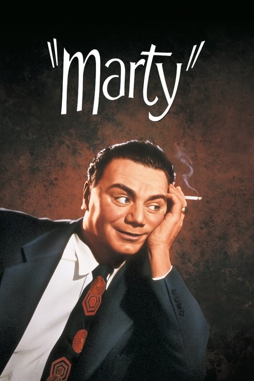
Marty ()
★★★
Plot: A guy who can\\'t seem to get a date, but is such a nice
guy. He takes care of his family and he always makes
sacrifices. But in the end, he gets a date, and she
likes him and all is well. Uplif...
The day of the jackel ()
★★★
Plot: The President of France is to be assassinated by The
Jackel. Dramatic game of cat and mouse. Unfortuately
the cop succeeds and the Jackel fails, but it\\'s
exciting.

The Hustler ()
★★★
Plot: A pool shark gets on a bad streak, falls in love, gets
on a hot streak and his girl kills herself.
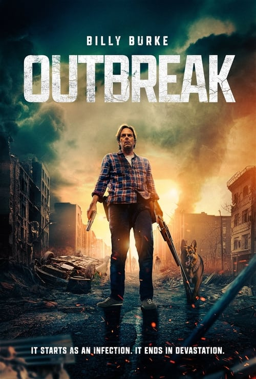
Outbreak ()
★★★
Plot: A bad monkey spreads a bad virus. The world\\'s only
hope is a rouge scientist named Rainman.
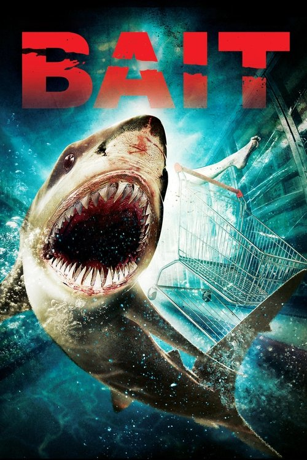
Bait ()
★★
Plot: A black ex-con is used as bait for a \\"genius\\" thief.
Sugar and Spice ()
★★
Plot: Idiotic cheerleaders decide to rob a bank.
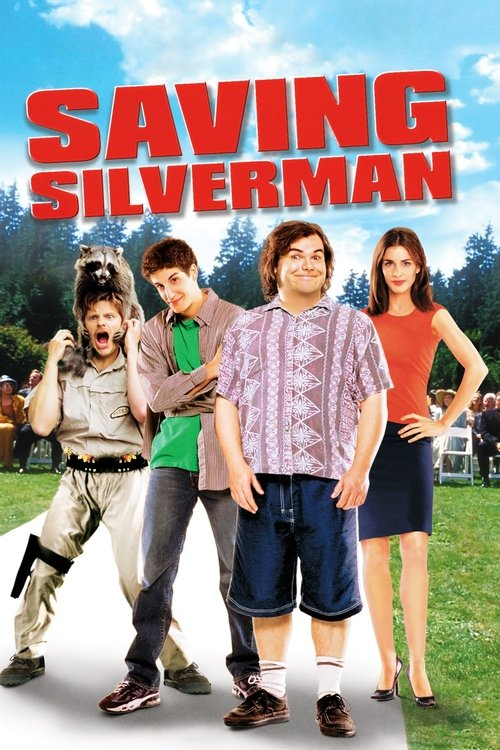
Saving Silverman ()
★★★
Plot: An idiot is getting married to a woman who is bad for
him. His friends try to save him by kidnapping his
fiance.
Girl Interupted ()
★★★
Plot: A girl pretends to be a boy. Later killed by
rednecks. Based on a true story.
Save the last dance ()
★★
Plot: A white girl in the ghetto falls in love with a black
guy. She also learns how to hip hop dance and uses
her new found ghetto-sense to win a ballet scholarship.
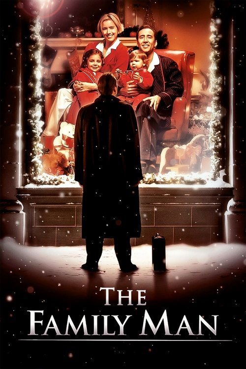
The Family Man ()
★★★
Plot: Have you seen It\\'s a Wonderful Life? It\\'s pretty much
the same thing.
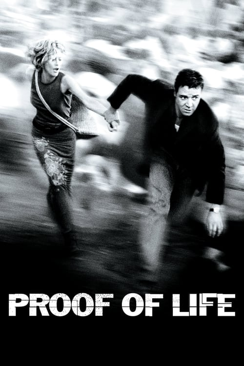
Proof of Life ()
★★★
Plot: A man (Dennis Quad) is kidnapped. A proffessional
negoatior is sent to negoiate for his release. He
falls in love with the man\\'s wife (Meg Ryan).
The Sun also Rises ()
★★★★
Plot: A crew of misfits visit Pampaloma for some
bullfighting action.
Junky ()
★★★★
Plot: A man develops a habit. A habit for heroin.
Queer ()
★★★
Plot: While taking some time off from heroin, Bill Lee
(burroughs) discovers his sex drive and has a serious
of not so great affairs with men in Mexico.
Timequake ()
★★★
Plot: A mix between fiction and non fiction. A timequake
occurs, making the world repeat, but then the
timequake ends and the world awakes. Kilgore Trout is
needed to make them wake up.
Another Roadside Attraction ()
★★★
Plot: The mummfied body of Christ is found and set up in a
roadside circus. So much more than just another
roadside attraction.
Riding the Rap ()
★★★
Plot: A cop tracks down a killer or something.
Faust ()
★★★
Plot: A man sells his soul to the devil. Obviously a
mistake.
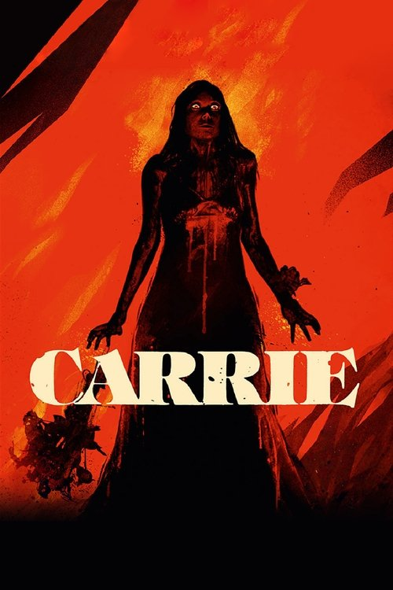
Carrie ()
★★★
Plot: A young girl is made fun of, until she develops
supernatural powers and kicks everyones fucking ass.
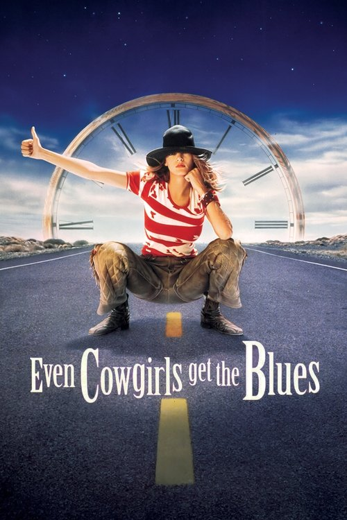
Even Cowgirls get the Blues ()
★★★
Plot: The story of a female hitchhiker. A woman with
extraordinary thumbs. The tale of a cowgirl and her
ranch. Attempting to describe the plot of a Tom
Robbins book is like trying to explain the
con...
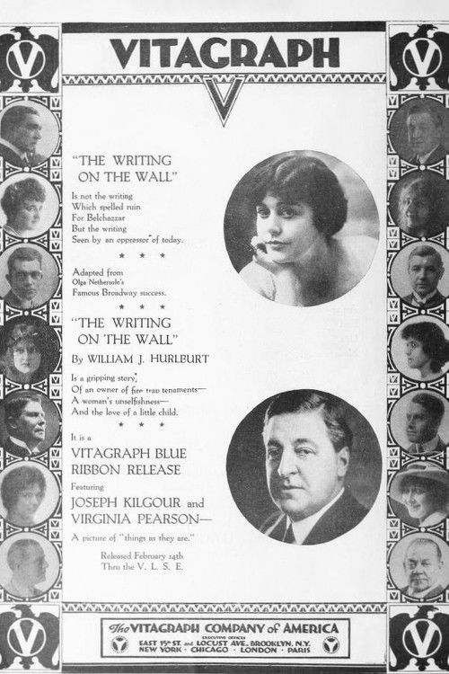
On Writing ()
★★★
Plot: Non Fiction. King discusses how he writes, why he
writes and touches on the time he got run over by a
car.
Survivor : A Novel ()
★★★
Plot: A refugee from a religious cult starts a suicide
promotion hotline. Twists and turns, then a SUPRISE
ENDING.
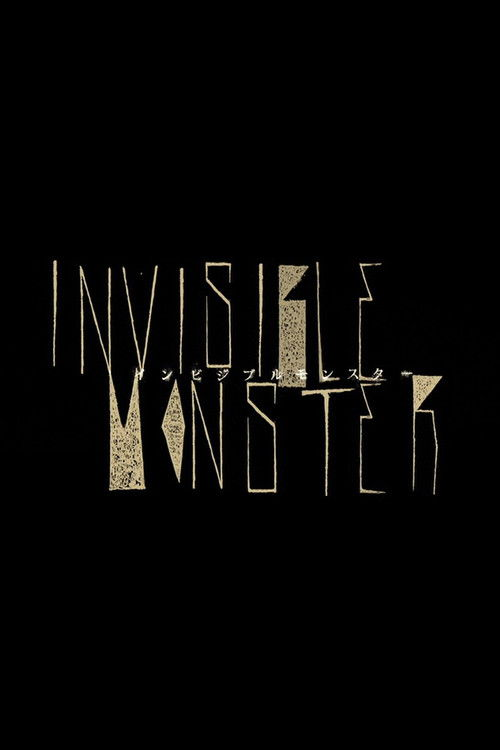
Invisible Monsters ()
★★★
Plot: A fashion model goes a bit whacked. Interesting plot
twists and a TYPICAL PALAHNIUK suprise ending.
Fight Club ()
★★★★
Plot: A man who can\\'t sleep becomes addicted to self help
groups, then starts one of his own: Fight Club. You
know the plot, you watched the movie.
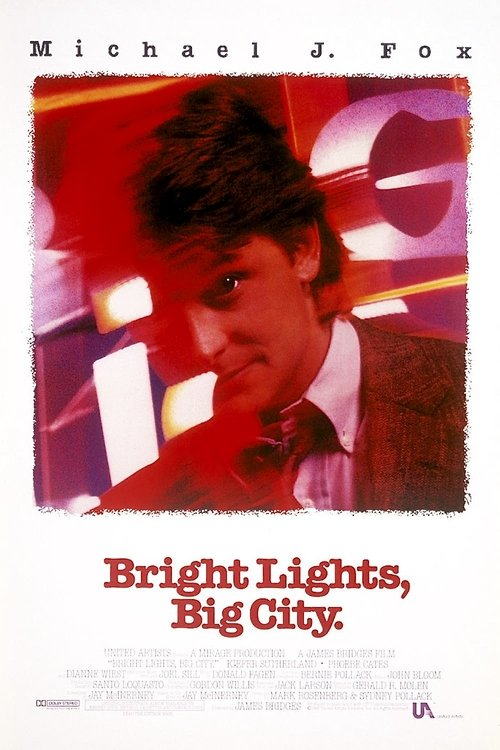
Bright Lights, Big City ()
★★★
Plot: An un-named character (you) journeys through
depression in New York City. Through sex and
joblessness, love and despair. Similar to The Catcher
in the Rye. Side note: Great supporting character...
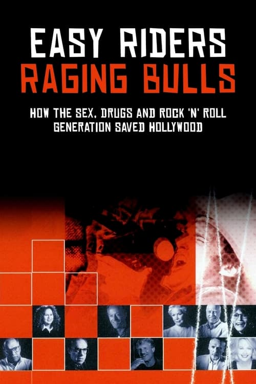
Easy Riders, Raging Bulls: How the sex-drugs-and-rock\\'n\\'roll generation saved hollywood ()
★★★
Plot: Non Fiction. An excellent account of Hollywood\\'s
rising directors of the 1970s and how they failed.
Secrets and Lies: Digital Security in a Networked World ()
★★★
Plot: Non Fiction. Schneider details the ins and outs of
computer security. Highlights: The Chapter on Users
is hilarious, and the opening in which Schneider
admits that total security is impossible du...
Basketball Diaries, The ()
★★★★
Plot: A story about the streets of New York. Mainly
features a young man\\'s journey through basketball,
drugs and sex.
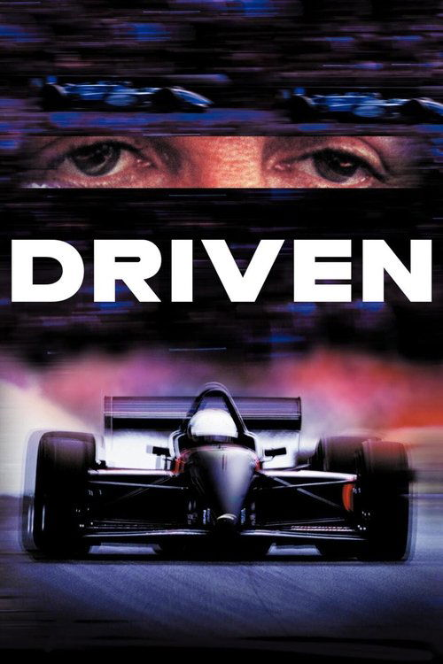
Driven (2001)
★
Plot: A young driver needs help from an old driver to be all
he can be.
Party Girl (1995)
★★★
Plot: A young Party Girl grows up and gets a job without
loosing her party roots.
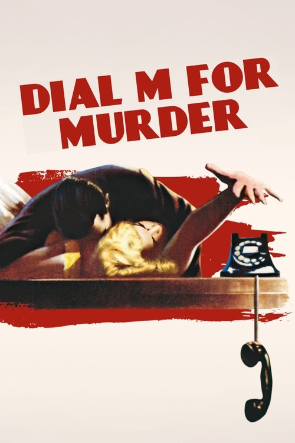
Dial 'M' for Murder (1954)
★★★
Plot: A man wants his wife dead. He blackmailes another man
to do it, but everything goes wrong.
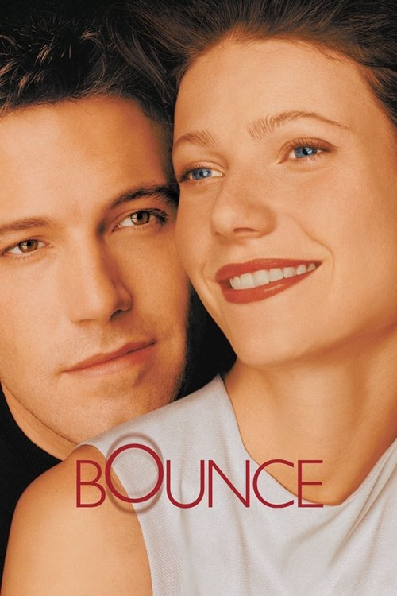
Bounce (2000)
★★
Plot: A guy dies on a plane crash with someone else's
ticket. Someone else feels bad about it and goes and
fucks, falls in love with that dead guy's wife.
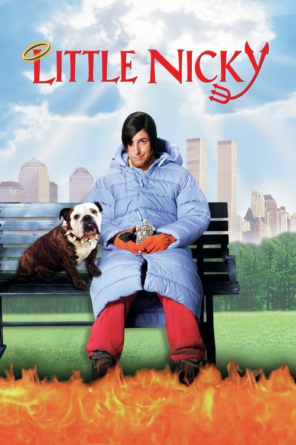
Little Nicky (2000)
★
Plot: The devil's son returns to earth to stop the other
devil's sons from causing the devil to die. And he
falls in love.

Shrek (2001)
★★★
Plot: An ogre rescues a princess and they fall in love.
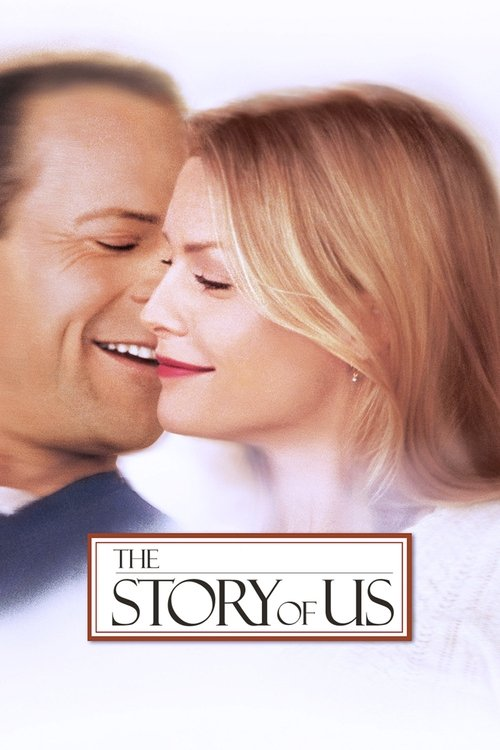
Story of Us, The (1999)
★★
Plot: A married couple on the rocks. Will they split or not.
Do they have a history? Are they an us? Who gives a
fuck?
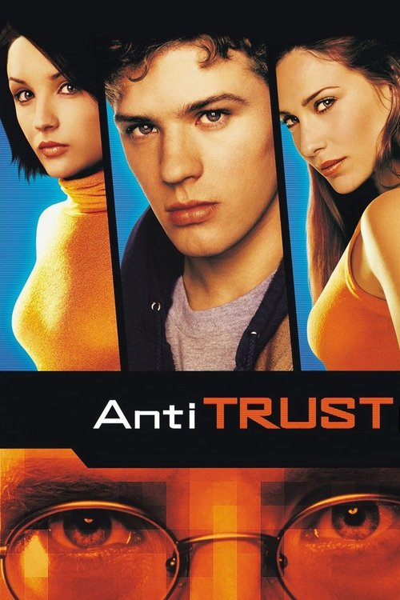
AntiTrust (2001)
★
Plot: A Bill Gates character is triumphing in the software
market by stealing code from kids in garages and
occasionally killing them. But it all goes wrong when
a young silly programmer double crosses h...
House of Yes, The (1997)
★★★
Plot: Parker Posey plays an insane woman who has a serious
Jackie-O obsession. Her brother returns home with a
finace and leaves in pine box.
Speechless (1994)
★★★
Plot: Based on James Carville and Mary Madson, two speech
writers, one republican, one democrat, fight, fuck and
fall in love.
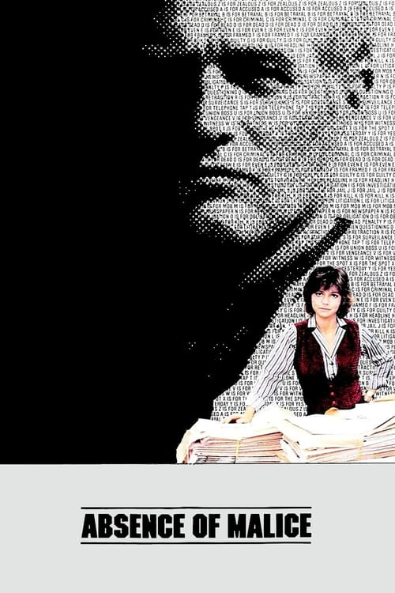
Absence of Malice (1981)
★★★
Plot: Paul Newman plays a son of a mobster who is being
invesigated in the disaperance of another mobster. The
kicker is he's only being investigated because the
feds are trying to get him to help them f...
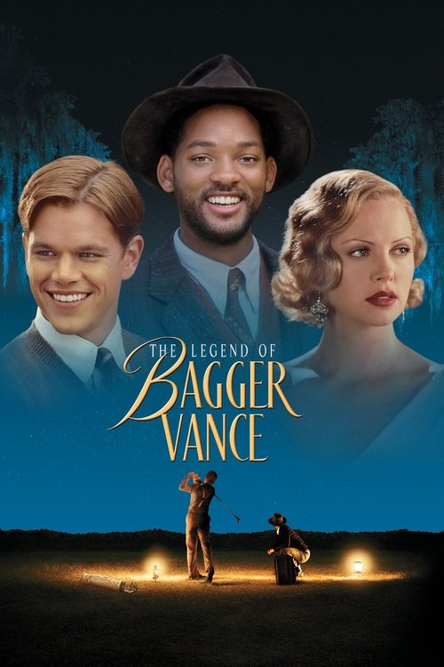
Legend of Bagger Vance, The (2000)
★★
Plot: Matt Damon, a golfer returns from WWI with a broken
spirit. Will Smith (Bagger Vance), a black caddy,
Jesus/God type figure appears and helps Damon regain
his game. Because after all, golf is life?...
Ghost in the Shell (1995)
★★★
Plot: Humans, cyborgs, the future. Plot deals with AI &
Consciousness. Do the cyborgs have souls? Follows the
trail of a few cyborg cops from Section 9. Film is
Japanese Animation.
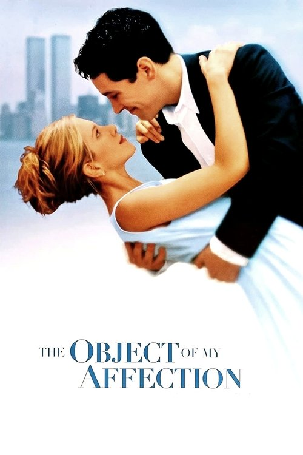
Object of My Affection, The (1998)
★★
Plot: Chasing Amy, reversed. Aniston falls in love with a
gay guy. Mildly interesting plot twist, she's
pregnant, they're going to raise the baby together...